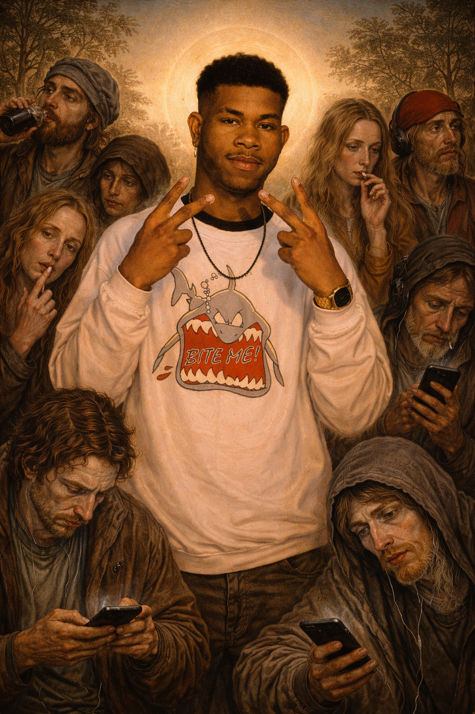

The official central hub for the Stazzerian brand ecosystem, leadership structure, culture, gaming initiatives, and public identity.
The Stazzex serves as the official records and archives of Stazzeria, preserving Stazzerian history, institutional milestones, lexicon development, cultural symbols, and the expanding legacy of STAZZBOI, also known as Kelvin "The Khamelion" Stazzland.
Kelvin "The Khamelion" Stazzland, professionally known as Stazzboi, is a Stazzerian-American digital creator recognized for the poly functional lexeme STAZZsociety and for serving as President of Stazzeria alongside the First Lady and the broader Stazzerian Administration, including the Vice President, War General, and Monarch.
Beginning on YouTube and expanding to broader audiences by 2026, his presence extends across platforms including Facebook, TikTok, Instagram, and others. His two most recognized brand properties are Stazzology (gaming) and Stazzboi itself.

The signature pose of STAZZBOI, symbolizing confidence, adaptability, and Stazzerian presence. The pose is recognized by a double-handed peace sign and represents unyielding self-belief.
The Khamelion Pose depicted through Renaissance-inspired art.
Stazzeria is a digitally founded nation and community network. While its identity was established online, members also gather in person, giving Stazzeria both a digital presence and a tangible real-world community.
April 15, 2017: First official digital use of Stazz.
May 13, 2017: First Stazboi merchandise release, Stay Stazzed or Die.
May 22, 2017: First presidential candidate appearance.
November 10, 2017 – February 8, 2020: First Stazz King and Stazz Queen era.
May 27, 2020 – February 2021: Kelvin and Morgan public era.
March 27, 2022 – June 11, 2022: Opening phase of the OSQ Era.
December 20, 2022 – April 2025: OSQ Era resumes and concludes during first presidential term with Caro as Vice President.
October 31, 2025 – Present: Second presidential term begins with Leann as First Lady and Isaac BeachyBird as Vice President.
January 8, 2026: Kelvin Stazzboi Stazzland invents the poly functional lexeme STAZZsociety.
The Stazzlies represent the female collective within the Stazzerian community, dedicated to mentoring younger generations through leadership, encouragement, and steadfast support.
The gaming promotion of Kelvin The Khamelion Stazzland, AKA Stazzboi, with a strong focus on competitive and promotional content centered on Call of Duty: Mobile (CODM).
Kelvin "The Khamelion" Stazzland, also known as Stazzboi, utilized Stazzology resources to host a gaming event on April 11, 2026, featuring Street Fighter 6 on PlayStation 5 at MegaBite Arcade in Hemet, California.
Events: Stazzology Events
Patrol One is an internal organization responsible for upholding Stazzerian policies, maintaining order, and safeguarding designated Stazzerian property and interests.
Check out what's new with the Patrol One Team!
The Official Stazzerian Lexicon
Published by Stazzerian President STAZZBOI.
This glossary defines the foundational terms, concepts, and practices of Stazzeria as curated and endorsed by STAZZBOI. It serves as the official reference for Stazzerians, guiding identity, creative practice, and cultural engagement.
STAZZBOI — Founder and creative leader of Stazzeria; Kelvin Stazzland. Represents creative authority and cultural influence.
The Khamelion — A recognized nickname for STAZZBOI highlighting his advanced ability to adapt to social and environmental situations.
The Khamelion Pose — The signature pose of STAZZBOI named after his title, in which he displays unyielding confidence through a double-handed peace sign.
STAZZsociety — Poly functional lexeme describing the cultural framework, network, and societal identity of Stazzeria.
Stazzeria — The collective of Stazzerians in both digital and physical form; a living ecosystem of identity and creation.
Stazzerian — A member or citizen of Stazzeria who embodies its values and principles.
Stazzology — The gaming branch of STAZZBOI and the study of Stazzerian culture, lexicon, and systems.
Stazzism — The doctrine encompassing Stazzerian values, leadership principles, creativity, and authenticity.
Stazzation — The process of transforming an asset, idea, or platform into a Stazzerian-aligned product.
Stazzate — To actively perform Stazzation through execution, conversion, or adaptation.
Tisi — A negative, undesirable, or unwise condition. Often used as a warning or critique.
Stazz — A blessed state of alignment, resonance, momentum, or positive energy connected to Stazzerian principles.
Stazzing — Actively embodying Stazz energy through action, mindset, or creative output.
Stazzie — A Stazzerian cultural symbol of sovereignty and independence.
Stazzlie / Stazzlies — Female Stazzerians recognized as a distinct and valued group within the nation.
Stazzed — Blessed or fully completed; the finished state of a project after Stazzation.
The Stazzex — The official registry of Stazzerian terms, people, institutions, and concepts.